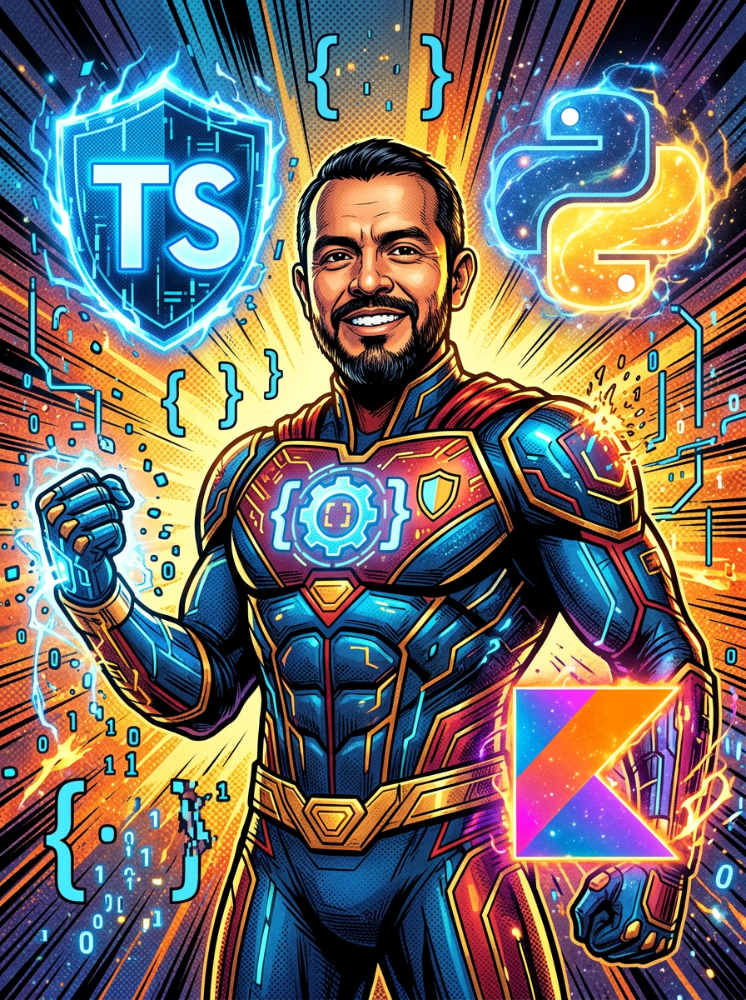
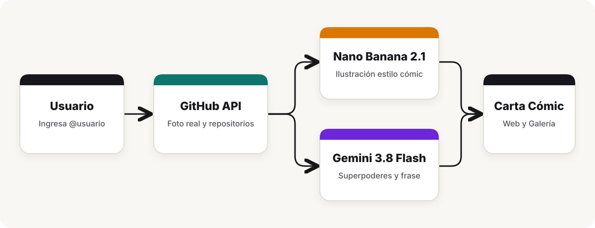
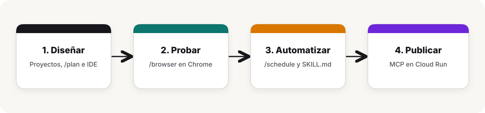

Paso 1 • Introducción
Qué se construye
Todo el código está disponible en este repo, puedes probar la app en vivo corriendo en Cloud Run y comparar cada etapa con el codelab oficial de Google Antigravity.
Para recorrer los pasos 2 al 9 del taller armé GitHub Comic Heroes, una aplicación que recibe cualquier usuario de GitHub, descarga su foto de perfil y sus repositorios principales desde el API de GitHub y genera una carta estilo cómic americano usando Vertex AI.

AGENTIC VIGILANTE (#154) • OMEGA CLASS
El servidor envía el avatar original a gemini-nano-banana-2.1 para ilustrar el retrato en proporción 3:4 y, en paralelo, usa gemini-3.8-flash para redactar sus poderes, su frase de batalla y sus enemigos a partir de sus lenguajes y repositorios reales.
Node.js 22 • @google/genai • gemini-nano-banana-2.1 • Cloud Run
Cada paso tiene dos variantes pensadas para el taller en vivo. La Opción A parte de una carpeta vacía y construye toda la aplicación al llegar al Paso 7 con /plan. La Opción B se ejecuta sobre el repositorio ya creado para interactuar con el código y las cartas desde el inicio.
Arquitectura y flujo del taller


Paso 2 • Sección 2 del Codelab
Instalación y verificación del entorno
Al instalar Antigravity 2.0 quedan dos aplicaciones en el sistema, el cliente principal para gestionar agentes y proyectos y Antigravity IDE para editar código. Para usar los modelos de Gemini sin dejar ningún API key en el repositorio, autenticamos el entorno local con Application Default Credentials en Google Cloud o definimos la variable GEMINI_API_KEY en la terminal.
# Con Vertex AI (ADC)
export GOOGLE_CLOUD_PROJECT="tu-proyecto-de-gcp"
gcloud auth application-default login
# Opcional si prefieres usar un API key
export GEMINI_API_KEY="tu-api-key"
Opción A — Carpeta vacía
Verifica mi entorno local para empezar el taller desde cero, revisa las versiones instaladas de Node.js y Python, confirma qué proyecto de Google Cloud está activo en gcloud y verifica que esta carpeta esté vacía.
Opción B — Proyecto ya creado
Verifica mi entorno local, revisa la versión de Node.js, confirma qué proyecto de Google Cloud está configurado en gcloud y resume los módulos de este repositorio (`src/`, `public/` y `.agents/skills/`).
Paso 3 • Sección 3 del Codelab
Proyectos y conversaciones en paralelo
Un proyecto en Antigravity 2.0 agrupa una o varias carpetas de trabajo y guarda su propia configuración de seguridad, revisión de artifacts y servidores MCP activos desde el menú de configuración del proyecto. Dentro de un mismo proyecto podemos abrir varias conversaciones al mismo tiempo para dividir tareas sin mezclar contexto.
Opción A — Carpeta vacía
Consulta el perfil público y los repositorios del usuario "ykro" usando el API de GitHub. Arma una tabla con su nombre, la URL de su foto de perfil (`avatar_url`), sus 3 lenguajes principales y sus 3 repositorios con más actividad.
Para un desarrollador que programa en TypeScript, Python y Kotlin y trabaja con agentes de IA, propón un alias de superhéroe de cómic, 2 superpoderes con puntaje PWR de 1 a 99, un enemigo principal y una frase para su globo de diálogo.
Opción B — Proyecto ya creado
Revisa @src/github.js y consulta el API de GitHub para el usuario "ykro". Muéstrame en una tabla los datos que extrae (`avatarUrl`, `topLanguages`, `topRepos`) para armar la carta.
Lee @data/cards.json y lista las cartas guardadas en la galería con su alias, arquetipo, modelo de imagen y superpoderes.
Paso 4 • Sección 4 del Codelab
Slash Commands y pruebas en vivo con /browser
Al escribir / en el chat aparecen los atajos de flujos integrados en Antigravity, como /plan, /browser, /schedule, /boost y /teamwork. El comando /browser levanta un subagente conectado a Google Chrome para navegar un sitio web, interactuar con la interfaz y tomar capturas de pantalla que quedan registradas en la conversación.
Opción A — Carpeta vacía
/browser Abre https://github.com/ykro en Chrome, identifica la foto de perfil, la biografía y los repositorios principales visibles en la página y devuélveme un resumen con una captura de pantalla.
Opción B — Proyecto ya creado
/browser Asegúrate de que el servidor (`node src/server.js`) esté corriendo en el puerto 8080. Abre http://localhost:8080 en Chrome, verifica que se muestre la carta con el retrato generado por Nano Banana 2.1, el avatar original de GitHub y los superpoderes, y toma una captura de pantalla.
Paso 5 • Sección 5 del Codelab
Time-based loops con /schedule
El comando /schedule permite configurar time-based loops y temporizadores que despiertan al agente cada cierto tiempo o después de una espera. Esta parte asíncrona es muy útil en el trabajo diario porque el trabajo puede ocurrir afuera del proyecto mientras uno sigue programando en otra cosa.
Por ejemplo, puedes dejar un loop que revise cada 15 minutos si un PR ya tiene comentarios de algún reviewer, vigilar un pipeline de CI que falla en GitHub Actions para analizar el log apenas truene, o consultar un API externo y actualizar datos locales cuando haya cambios.
Opción A — Carpeta vacía (revisar PRs, comentarios de reviewer o CI)
/schedule Configura un temporizador dentro de 60 segundos que consulte en GitHub la actividad reciente, PRs abiertos o estado de CI del repositorio `ykro/agy-comic-heroes` (o los repositorios públicos de `ykro`) y me avise si hay comentarios pendientes de un reviewer o algún cambio que atender.
Opción B — Proyecto ya creado (vigilar el repo y generar un enemigo en la galería)
/schedule Programa una tarea dentro de 60 segundos que revise si hay PRs o ejecuciones de CI fallidas en el repositorio de GitHub y además ejecute `node src/cli.js --next-enemy` para generar la carta del siguiente enemigo en `data/cards.json`. Cuando termine, avísame qué encontró y qué enemigo se agregó.
Paso 6 • Sección 6 del Codelab
Servidores MCP y deploy a Cloud Run
En la barra lateral izquierda de Antigravity 2.0 (en la sección Customizations / Skills & Customizations, arriba de Settings, o desde el menú ... → MCP Servers) puedes ver los servidores MCP instalados y abrir ~/.gemini/config/mcp_config.json. Con el servidor MCP de Cloud Run configurado, el agente puede listar servicios, leer logs y hacer deploy del contenedor sin salir de la conversación.
{
"mcpServers": {
"cloudrun": {
"command": "npx",
"args": ["-y", "@google-cloud/cloud-run-mcp"]
}
}
}
Opción A — Carpeta vacía
Usa el servidor MCP de Cloud Run (`list_services` y `get_service`) para revisar los servicios activos en mi proyecto de Google Cloud en `us-central1` y muéstrame la URL pública del servicio `github-comic-cards`.
Opción B — Proyecto ya creado
Usa el servidor MCP de Cloud Run (`deploy_local_folder` o `get_service`) para hacer deploy o verificar este proyecto en el servicio `github-comic-cards` en `us-central1` y devuélveme la URL pública.
Paso 7 • Sección 7 del Codelab
Artifacts con /plan
Cuando usamos /plan, Antigravity escribe primero un Implementation Plan en el panel auxiliar derecho y espera confirmación antes de tocar los archivos. Al terminar la implementación genera un Walkthrough con el resumen de cambios y las pruebas ejecutadas.
Opción A — Carpeta vacía (construir toda la app)
/plan Diseña y construye la aplicación "GitHub Comic Heroes" en Node.js siguiendo el skill global `github-comic-heroes`:
1. `src/github.js` consulta el API público de GitHub (`https://api.github.com/users/` y `/repos`), obtiene los lenguajes principales, los 3 repositorios más relevantes y descarga el avatar en base64.
2. `src/comic-ai.js` usa `@google/genai` con Vertex AI (`vertexai: true`, `location: "global"`) sin uso de key en el código para transformar en paralelo la foto de perfil en una ilustración estilo cómic con `gemini-nano-banana-2.1` (`responseModalities: ["IMAGE"]`, `aspectRatio: "3:4"`) y generar con `gemini-3.8-flash` el alias, 2 superpoderes con puntaje PWR y una frase de batalla.
3. `src/cli.js` (con soporte para `` y `--next-enemy`), `src/server.js` y `public/index.html` con la galería web en el puerto 8080.
4. Incluye el skill `.agents/skills/comic-director/SKILL.md` y su script `.agents/skills/comic-director/scripts/hero_ranker.mjs`. No uses diagramas Mermaid.
Opción B — Proyecto ya creado (agregar modo versus contra enemigos)
/plan Agrega un endpoint `GET /api/battle?hero=ykro&enemy=torvalds` en `src/server.js` y un botón en `public/index.html` para enfrentar a un héroe contra un enemigo de la galería comparando sus puntos PWR, repositorios y estrellas. No uses diagramas Mermaid.
Paso 8 • Sección 8 del Codelab
Antigravity IDE
En la esquina superior derecha del panel auxiliar está el botón Open IDE, que abre el proyecto directamente en Antigravity IDE. Desde el panel lateral del agente se pueden referenciar archivos específicos usando @ mientras se revisan los cambios en el editor.
Opción A — Carpeta recién construida
En @src/comic-ai.js, explícame cómo corren en paralelo `generateComicLore` (`gemini-3.8-flash`) y `generateComicPortrait` (`gemini-nano-banana-2.1`) con `Promise.all` para reducir la latencia al crear una carta.
Opción B — Proyecto ya creado
Revisa @src/comic-ai.js y @src/store.js, y explícame cómo se envía el avatar de GitHub en `inlineData` hacia `gemini-nano-banana-2.1` y cómo se persiste la imagen en `public/generated/`.
Paso 9 • Sección 9 del Codelab
Skills del proyecto y Conclusiones
Los archivos dentro de .agents/skills/ aplican Progressive Disclosure, al inicio el agente solo lee el encabezado YAML con el nombre y la descripción de cada habilidad, y únicamente carga el resto de las instrucciones y scripts cuando la tarea lo pide. En este proyecto, .agents/skills/comic-director/SKILL.md calcula el rango del personaje, le asigna su enemigo principal según su lenguaje dominante, redacta su historia de origen y genera una insignia SVG para el README de GitHub.
Opción A — Crear y ejecutar el skill
Crea un skill en `.agents/skills/comic-director/SKILL.md` (con su script en `scripts/hero_ranker.mjs`) que tome una carta de `data/cards.json`, calcule su rango (`OMEGA CLASS` o `ALPHA CLASS`), le asigne un enemigo según su lenguaje principal, redacte su historia de origen y exporte una insignia SVG en `public/badges/.svg`. Luego ejecútalo para `ykro`.
Opción B — Proyecto ya creado
Usa el skill `comic-director` para actualizar la carta de `ykro` en @data/cards.json con su rango, su enemigo principal y su historia de origen a partir de sus repositorios, y genera su insignia SVG en `public/badges/ykro.svg`.
Conclusiones
En pocos pasos pasamos de una carpeta local a una aplicación conectada a Vertex AI, probada en Chrome con /browser, automatizada con time-based loops en /schedule, extendida con skills del repositorio y publicada en Cloud Run mediante MCP. Si pruebas el taller con tu propio usuario de GitHub o armas nuevas cartas, cuéntame cómo te va. Nos vemos en el código.